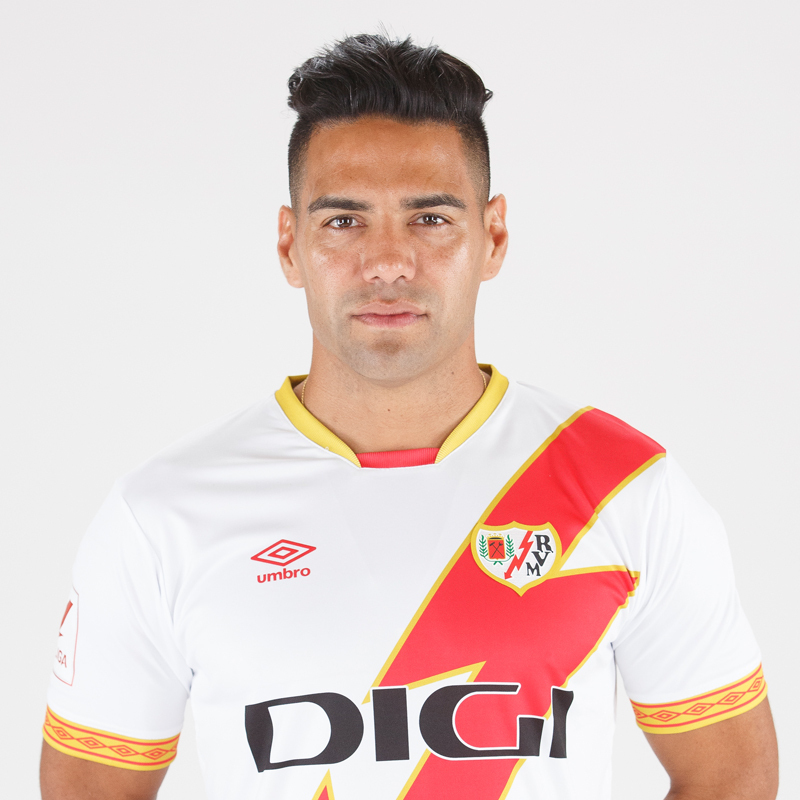
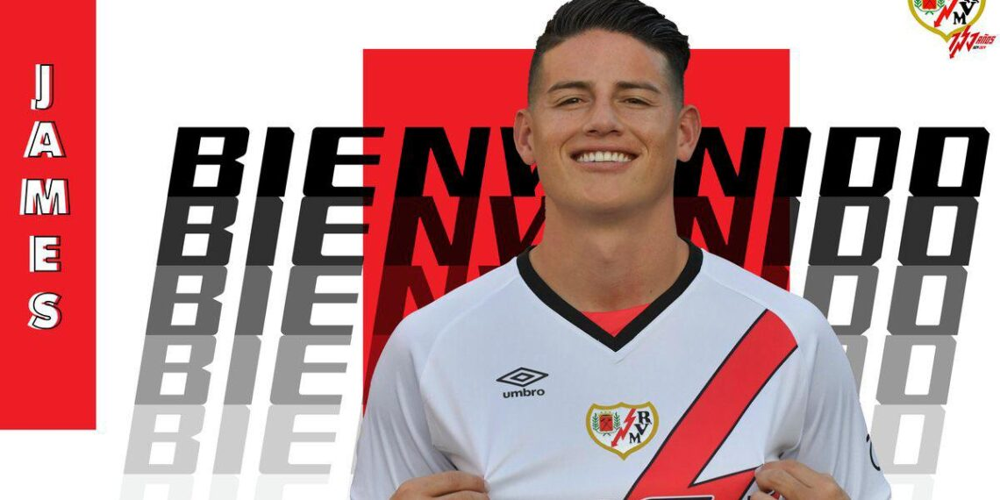
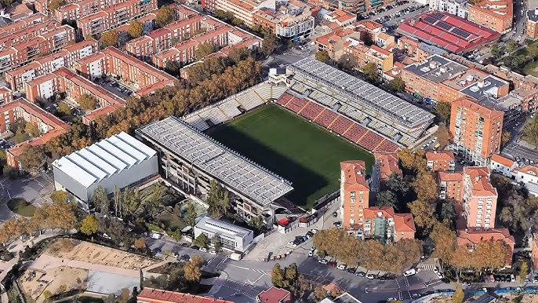

Rayo Vallecano de Madrid, S.A.D. je španělský fotbalový klub sídlící v obvodu Puente de Vallecas
v hlavním městě Madrid. Momentálně hraje španělskou nejvyšší soutěž zvanou La Liga.
Založen byl 29. května 1924. Během své historie strávil 19 sezón v nejvyšší soutěži.
Přičemž nejlepším umístěním je 9. místo z roku 2000.
Óscar Guido Trejo (narozený 26 dubna 1988)
je argentinský profesionální fotbalista,
který hraje jako útočný záložník nebo útočník za klub Rayo Vallecano
v lize laliga, kde je také kapitánem.
Falcao García Zárate je kolumbijský profesionální fotbalista, který hraje na pozici útočníka za španělský klub Rayo Vallecano a za kolumbijský národní tým.
1× vítěz argentinské ligy (2008 – Clausura)
1× vítěz portugalské ligy (2010/11), 2× vítěz portugalského poháru (2009/10, 2010/11), 2× vítěz portugalského superpoháru (2010, 2011), 1× vítěz Evropské ligy (2010/11)
1× vítěz Evropské ligy (2011/12) 1× vítěz evropského Superpoháru (2012) 1× vítěz Copa del Rey (2012/13)
1× vítěz Ligue 1 (2016/17) Reprezentační 1× vítěz mistrovství Jižní Ameriky hráčů do 20 let (2005)
1× nejlepší střelec portugalského poháru (2009/10), 1× nejlepší hráč portugalské ligy (2010/11), 2× nejlepší střelec Evropské ligy UEFA (2010/11, 2011/12), 2× nejlepší hráč finálového zápasu evropské ligy UEFA (2011, 2012), 1× nejlepší hráč zápasu o Superpohár UEFA (2012), 1× nejlepší sportovec roku dle časopisu Gentlemen's Quarterly (2012), Světová jedenáctka FIFA FIFPro – 2012, Hráč měsíce Ligue 1
James David Rodríguez Rubio, známý jako James Rodríguez nebo James, je kolumbijský profesionální fotbalista, který hraje na pozici ofensivního záložníka či křídelníka za španělský klub Rayo Vallecano a za kolumbijský národní tým. Levonohý konstruktivní záložník, dokáže šance připravovat i sám proměňovat.
Zlatá bota na Mistrovství světa 2014: Jeho výkony na tomto turnaji byly fenomenální, když se stal nejlepším střelcem a získal tak prestižní Zlatou botu. Vítězství v Evropské lize s FC Porto: S portugalským klubem získal důležitou evropskou trofej. Dva tituly v La Lize s Realem Madrid: Byl součástí úspěšných týmů Realu Madrid, které ovládly španělskou ligu. Dvě vítězství v Lize mistrů: S Realem Madrid a Bayern Mnichov zvedl nad hlavu nejprestižnější klubovou trofej v Evropě. Další významné trofeje: Na svém kontě má také vítězství v Superpoháru UEFA, německém poháru a dalších národních pohárech.
Estadio de Vallecas je více než jen fotbalový stadion. Je to místo, kde se setkává historie, vášniví fanoušci a úžasná atmosféra. Stadion byl otevřen v roce 1976 a od té doby prošel několika rekonstrukcemi, aby vyhovoval moderním požadavkům. Jeho kapacita je 14 708 diváků.
Unikátní atmosféra: Fanoušci Rayo Vallecano jsou známí svou oddaností a hlasitým povzbuzováním. Atmosféra na zápasech je elektrizující a často srovnatelná s mnohem většími stadiony.
Histroie a tradice: Stadion má bohatou historii a je spojen s mnoha významnými okamžiky v dějinách klubu Rayo Vallecano.
Koncerty a další akce: Kromě fotbalových zápasů se na stadionu konají také koncerty a další kulturní akce. V minulosti zde vystoupily například kapely jako Queen a Metallica.
